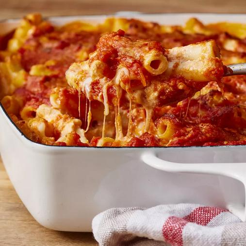

Baked Ziti

Description:
A simple, cheesy, delightful ziti!
This recipe makes 8 servings, is best served fresh and enjoyed with loved ones.
This recipe is from allrecipes all credit goes to the creator. The original recipe may be found here.
Ingredients:
- 16 oz. Ziti Pasta
- 24 oz. Ricotta Cheese
- 1 lb. Shredded Mozarella Cheese
- 1 Egg - Beaten
- 32 oz. Pasta Sauce
- 2 tsp. Lemon Zest
- ¼ C. Grated Parmesan Cheese
Steps:
- Prehead oven to 375℉ or 190℃
- Lightly grease a 9"x13" baking dish
- Bring a large pot of lightly salted water to a boil
- Add ziti and cook for 8 to 10 minutes or until al dente; drain and rinse
- Combine cooked ziti, ricotta cheese, mozzarella cheese, egg, and 1 ½ C. pasta sauce in a medium bowl then transfer to prepared baking dish
- Top with remaining spaghetti sauce, then sprinkle with Parmesan cheese
- Bake in oven for 30 minutes
- Allow to stand for 15 minutes then serve